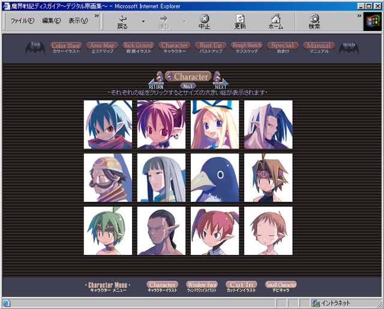

※自動的にソフトがスタートしない場合は、『マイコンピュータ』アイコンをダブルクリックして、中にあるCD-ROMドライブのアイコンを右クリックして表示されるメニューから『開く』を選んで以下の写真の画面を開いてください。
フォルダの中のindex.html アイコンをダブルクリックするとソフトがスタートします。
※MANUAL_W.html（この文章です）は、本ソフトのマニュアルです。
ソフトご使用前にご一読ください。
（ソフト起動後のメニューから読む事も出来ます）

魔界戦記 ディスガイア デジタル原画集 操作方法説明書
Windowsでご使用の場合
Macintoshでご使用の場合
フォルダの中のindex_nc.htmlアイコンをダブルクリックするとソフトがスタートします。
※MANUAL_nc.html（この文書です）は本ソフトのマニュアルです。
ソフトご使用の前にご一読ください。
（ソフト起動後のメニューから読む事も出来ます）


マニュアル
カラーイラスト
エリアマップ
背景イラスト
キャラクターイラスト
バストアップイラスト
ラフスケッチ
おまけ
ボタンの説明
見たい内容を選ぶ
表示が選んだ内容のインデックス（一覧）画面に変わります。
インデックスが数ページに及んだ場合、画面下にページ一覧が表示されます。

見たい絵を選ぶ
大きいサイズの絵を見る
ユーザーサポート連絡先
注意事項